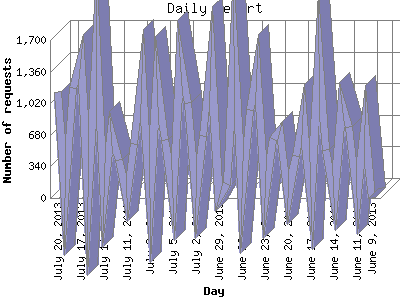

The Daily Report identifies the activity for each day within the reporting period. Remember that one page hit can result in several server requests as the images for each page are loaded.

| Day | Number of requests | Number of page requests | |
|---|---|---|---|
| 1. | June 9, 2013 | 0 | 0 |
| 2. | June 10, 2013 | 788 | 143 |
| 3. | June 11, 2013 | 0 | 0 |
| 4. | June 12, 2013 | 767 | 164 |
| 5. | June 13, 2013 | 1,012 | 125 |
| 6. | June 14, 2013 | 0 | 0 |
| 7. | June 15, 2013 | 513 | 95 |
| 8. | June 16, 2013 | 1,550 | 150 |
| 9. | June 17, 2013 | 15 | 10 |
| 10. | June 18, 2013 | 892 | 118 |
| 11. | June 19, 2013 | 457 | 82 |
| 12. | June 20, 2013 | 1 | 1 |
| 13. | June 21, 2013 | 723 | 84 |
| 14. | June 22, 2013 | 638 | 83 |
| 15. | June 23, 2013 | 2 | 0 |
| 16. | June 24, 2013 | 1,383 | 161 |
| 17. | June 25, 2013 | 947 | 55 |
| 18. | June 26, 2013 | 2 | 2 |
| 19. | June 27, 2013 | 1,640 | 134 |
| 20. | June 28, 2013 | 153 | 79 |
| 21. | June 29, 2013 | 2 | 1 |
| 22. | June 30, 2013 | 1,512 | 115 |
| 23. | July 1, 2013 | 667 | 85 |
| 24. | July 2, 2013 | 2 | 2 |
| 25. | July 3, 2013 | 1,026 | 112 |
| 26. | July 4, 2013 | 1,512 | 98 |
| 27. | July 5, 2013 | 2 | 0 |
| 28. | July 6, 2013 | 624 | 96 |
| 29. | July 7, 2013 | 1,276 | 114 |
| 30. | July 8, 2013 | 1 | 1 |
| 31. | July 9, 2013 | 1,334 | 133 |
| 32. | July 10, 2013 | 581 | 82 |
| 33. | July 11, 2013 | 1 | 1 |
| 34. | July 12, 2013 | 404 | 78 |
| 35. | July 13, 2013 | 710 | 103 |
| 36. | July 14, 2013 | 15 | 1 |
| 37. | July 15, 2013 | 1,669 | 111 |
| 38. | July 16, 2013 | 15 | 13 |
| 39. | July 17, 2013 | 1,495 | 94 |
| 40. | July 18, 2013 | 1,180 | 90 |
| 41. | July 19, 2013 | 1 | 0 |
| 42. | July 20, 2013 | 1,140 | 112 |
Most active day March 4, 2013 : 234 pages sent. 1,669 requests handled.
Daily average: 75 pages sent. 683 requests handled.
This report was generated on July 20, 2013 18:53.
Report time frame May 30, 2012 16:23 to July 20, 2013 23:58.
| Web statistics report produced by: analog 5.1 / Report Magic 2.21 |